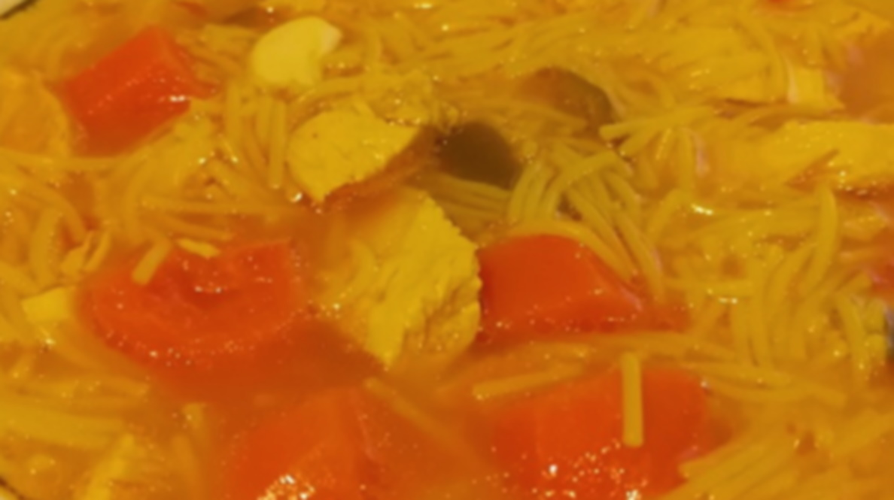

DIFFICULTY
Easy
CUISINE
Spanish
PREP TIME
15'
TOTAL TIME
1h
Ingredients for 4 servings
- Fine noodles
- 1 onion
- 2 tomatoes
- 2 carrots
- 5 cloves of garlic
- Half chicken breast or equivalent
- 1 tsp sweet paprika
- Salt
- 2 tbsp olive oil
Utensils
Steps
- Heat until boiling the chicken, 1.5L water and some salt.
- Add the tomatoes and onions, cut in half, the carrots and the garlic. Don't remove the skin of the tomatoes.
- Once it's boiling, lower to medium heat, add the oil, paprika and count 45 min.
- Cut carrots in slices, chicken in small pieces, throw out the onion pressing it for the juice and peel the tomatoes. Take 1 piece of carrot, the tomatoes, 2 or 3 pieces of garlic and some juice, all into a blender.
- Correct for salt, take to a boil, measure the noodles to cover the low part of a bowl and add them, cooking for whatever the package says.
- When time finishes, add the finely blended juice.
Variations
- You can put a sliced quarter of a bell pepper.
- Or a few strands of saffron, to give color and a subtle flavor.
!
NUTRITION FACTS
Per serving
Calories49 kcal
Fat0 g
Carbohydrates10 g
Sugar5 g
Protein1 g
Vit. A35% DV
Vit. B66% DV
Vit. C12% DV
Vit. K11% DV
Potassium12% DV
Copper5% DV
CULINARY TIP
At least in Spain we tend to use the orange artificial colorant a lot, made from tartrazine (E-102). It's not healthy. In this recipe we replaced it with the piece of carrot and tomatoes blended at the end, plus some optional saffron.
CULINARY TIP
Don't add the blended juice before turning off the heat because the trapped air will make foam, worsening the look.
Back to all recipes